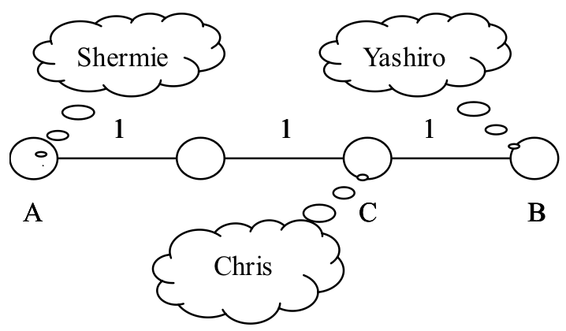

Chris家的电话铃响起了，里面传出了Chris的老师焦急的声音：“喂，是Chris的家长吗？你们的孩子又没来上课，不想参加考试了吗？”一听说要考试，Chris的父母就心急如焚，他们决定在尽量短的时间内找到Chris。他们告诉Chris的老师：“根据以往的经验，Chris现在必然躲在朋友Shermie或Yashiro家里偷玩《拳皇》游戏。现在，我们就从家出发去找Chris，一但找到，我们立刻给您打电话。”说完砰的一声把电话挂了。
Chris居住的城市由N个居住点和若干条连接居住点的双向街道组成，经过街道x需花费Tx分钟。可以保证，任两个居住点间有且仅有一条通路。Chris家在点C，Shermie和Yashiro分别住在点A和点B。Chris的老师和Chris的父母都有城市地图，但Chris的父母知道点A、B、C的具体位置而Chris的老师不知。
为了尽快找到Chris，Chris的父母会遵守以下两条规则：
- 如果A距离C比B距离C近，那么Chris的父母先去Shermie家寻找Chris，如果找不到，Chris的父母再去Yashiro家；反之亦然。
- Chris的父母总沿着两点间唯一的通路行走。
显然，Chris的老师知道Chris的父母在寻找Chris的过程中会遵守以上两条规则，但由于他并不知道A，B，C的具体位置，所以现在他希望你告诉他，最坏情况下Chris的父母要耗费多长时间才能找到Chris？

例如上图，这座城市由4个居住点和3条街道组成，经过每条街道均需花费1分钟时间。假设Chris住在点C，Shermie住在点A，Yashiro住在点B，因为C到B的距离小于C到A的距离，所以Chiris的父母会先去Yashiro家寻找Chris，一旦找不到，再去Shermie家寻找。这样，最坏情况下Chris的父母需要花费4分钟的时间才能找到Chris。
 Comet OJ
Comet OJ